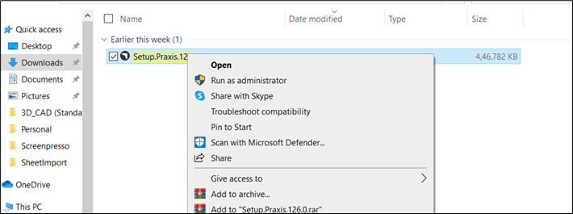
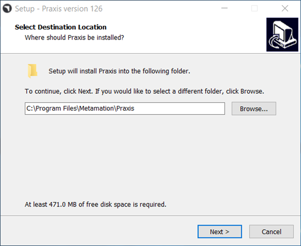

Execute Praxis Setup to begin the installation

Choose the installation directory or accept the installation default C:\Program Files\Metamation\Praxis and click Next.

Full Installation – In this mode all components (Server, Desktop and Engine) are installed on the same computer.
Server Installation – Only server and Desktop are installed.
Client Installation – Only Desktop is installed on the target computer. You can also pick Engine in this mode.
Stations – To set up stations for Flux, MetaCAM, RightAngle, Vulcan.
Custom Installation - Pick and choose the appropriate combination.
● Please note that Praxis Desktop is included and installed with all packages. (Praxis Desktop consists of Praxis App + Monitor).
● In a typical installation, you would choose Full installation on a server computer and Client installation on others.
● In scenarios where the server computer doesn’t meet the graphics requirements, you can pick Server installation at the server, Client + Engine at the agent computer and just Client (Desktops only) at others.